Microsoft Azure AI Fundamentals Certification (AI-900) Exam Questions
Attention
The questions in this website is a collection of free available resources from several sources. The use of any parts for commercial use is strictly prohabit. For personnal use only.
Question 1
A company employs a team of customer service agents to provide telephone and email support to customers.
The company develops a webchat bot to provide automated answers to common customer queries.
Which business benefit should the company expect as a result of creating the webchat bot solution?
A. increased sales
B. a reduced workload for the customer service agents
C. improved product reliability
Answer 1
Correct Answer: B
Question 2
For a machine learning progress, how should you split data for training and evaluation?
A. Use features for training and labels for evaluation.
B. Randomly split the data into rows for training and rows for evaluation.
C. Use labels for training and features for evaluation.
D. Randomly split the data into columns for training and columns for evaluation.
Answer 2
Correct Answer: B
The Split Data module is particularly useful when you need to separate data into training and testing sets. Use the Split Rows option if you want to divide the data into two parts. You can specify the percentage of data to put in each split, but by default, the data is divided 50-50. You can also randomize the selection of rows in each group, and use stratified sampling.
Reference:
https://docs.microsoft.com/en-us/azure/machine-learning/studio-module-reference/split-data
Question 3
HOTSPOT -
You are developing a model to predict events by using classification.
You have a confusion matrix for the model scored on test data as shown in the following exhibit.

Use the drop-down menus to select the answer choice that completes each statement based on the information presented in the graphic.
NOTE: Each correct selection is worth one point.
Hot Area:

Answer 3

Box 1: 11 -

TP = True Positive.
The class labels in the training set can take on only two possible values, which we usually refer to as positive or negative. The positive and negative instances that a classifier predicts correctly are called true positives (TP) and true negatives (TN), respectively. Similarly, the incorrectly classified instances are called false positives (FP) and false negatives (FN).
Box 2: 1,033 -
FN = False Negative -
Reference:
https://docs.microsoft.com/en-us/azure/machine-learning/studio/evaluate-model-performance
Question 4
You build a machine learning model by using the automated machine learning user interface (UI).
You need to ensure that the model meets the Microsoft transparency principle for responsible AI.
What should you do?
A. Set Validation type to Auto.
B. Enable Explain best model.
C. Set Primary metric to accuracy.
D. Set Max concurrent iterations to 0.
Answer 4
Correct Answer: B
Model Explain Ability.
Most businesses run on trust and being able to open the ML ג€black boxג€ helps build transparency and trust. In heavily regulated industries like healthcare and banking, it is critical to comply with regulations and best practices. One key aspect of this is understanding the relationship between input variables (features) and model output. Knowing both the magnitude and direction of the impact each feature (feature importance) has on the predicted value helps better understand and explain the model. With model explain ability, we enable you to understand feature importance as part of automated ML runs.
Reference:
Question 5
HOTSPOT -
For each of the following statements, select Yes if the statement is true. Otherwise, select No.
NOTE: Each correct selection is worth one point.
Hot Area:

Answer 5

Anomaly detection encompasses many important tasks in machine learning:
Identifying transactions that are potentially fraudulent.
Learning patterns that indicate that a network intrusion has occurred.
Finding abnormal clusters of patients.
Checking values entered into a system.
Reference:
https://docs.microsoft.com/en-us/azure/machine-learning/studio-module-reference/anomaly-detection
Question 6
HOTSPOT -
To complete the sentence, select the appropriate option in the answer area.
Hot Area:

Answer 6
Correct Answer: reliability and safety
Reliability and safety:
AI systems need to be reliable and safe in order to be trusted. It is important for a system to perform as it was originally designed and for it to respond safely to new situations. Its inherent resilience should resist intended or unintended manipulation. Rigorous testing and validation should be established for operating conditions to ensure that the system responds safely to edge cases, and A/B testing and champion/challenger methods should be integrated into the evaluation process.
An AI system's performance can degrade over time, so a robust monitoring and model tracking process needs to be established to reactively and proactively measure the model's performance and retrain it, as necessary, to modernize it.
Reference:
https://docs.microsoft.com/en-us/azure/cloud-adoption-framework/innovate/best-practices/trusted-ai
Question 7
DRAG DROP -
Match the types of AI workloads to the appropriate scenarios.
To answer, drag the appropriate workload type from the column on the left to its scenario on the right. Each workload type may be used once, more than once, or not at all.
NOTE: Each correct selection is worth one point.
Select and Place:

Answer 7

Box 3: Natural language processing
Natural language processing (NLP) is used for tasks such as sentiment analysis, topic detection, language detection, key phrase extraction, and document categorization.
Reference:
Question 8
You are designing an AI system that empowers everyone, including people who have hearing, visual, and other impairments.
This is an example of which Microsoft guiding principle for responsible AI?
A. fairness
B. inclusiveness
C. reliability and safety
D. accountability
Answer 8
Correct Answer: B
Inclusiveness: At Microsoft, we firmly believe everyone should benefit from intelligent technology, meaning it must incorporate and address a broad range of human needs and experiences. For the 1 billion people with disabilities around the world, AI technologies can be a game-changer.
Reference:
https://docs.microsoft.com/en-us/learn/modules/responsible-ai-principles/4-guiding-principles
Question 9
DRAG DROP -
Match the Microsoft guiding principles for responsible AI to the appropriate descriptions.
To answer, drag the appropriate principle from the column on the left to its description on the right. Each principle may be used once, more than once, or not at all.
NOTE: Each correct selection is worth one point.
Select and Place:

Answer 9

Box 1: Reliability and safety -
To build trust, it's critical that AI systems operate reliably, safely, and consistently under normal circumstances and in unexpected conditions. These systems should be able to operate as they were originally designed, respond safely to unanticipated conditions, and resist harmful manipulation.
Box 2: Accountability -
The people who design and deploy AI systems must be accountable for how their systems operate. Organizations should draw upon industry standards to develop accountability norms. These norms can ensure that AI systems are not the final authority on any decision that impacts people's lives and that humans maintain meaningful control over otherwise highly autonomous AI systems.
Box 3: Privacy and security -
As AI becomes more prevalent, protecting privacy and securing important personal and business information is becoming more critical and complex. With AI, privacy and data security issues require especially close attention because access to data is essential for AI systems to make accurate and informed predictions and decisions about people. AI systems must comply with privacy laws that require transparency about the collection, use, and storage of data and mandate that consumers have appropriate controls to choose how their data is used
Reference:
https://docs.microsoft.com/en-us/learn/modules/responsible-ai-principles/4-guiding-principles
Question 10
HOTSPOT -
To complete the sentence, select the appropriate option in the answer area.
Hot Area:
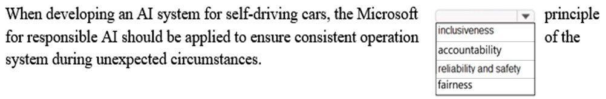
Answer 10
Correct Answer: reliability and safety
Reliability and safety: To build trust, it's critical that AI systems operate reliably, safely, and consistently under normal circumstances and in unexpected conditions.
These systems should be able to operate as they were originally designed, respond safely to unanticipated conditions, and resist harmful manipulation.
Reference:
https://docs.microsoft.com/en-us/learn/modules/responsible-ai-principles/4-guiding-principles
Question 11
You are building an AI system.
Which task should you include to ensure that the service meets the Microsoft transparency principle for responsible AI?
A. Ensure that all visuals have an associated text that can be read by a screen reader.
B. Enable autoscaling to ensure that a service scales based on demand.
C. Provide documentation to help developers debug code.
D. Ensure that a training dataset is representative of the population.
Answer 11
Correct Answer: C
Reference:
https://docs.microsoft.com/en-us/learn/modules/responsible-ai-principles/4-guiding-principles
Question 12
DRAG DROP -
Match the types of AI workloads to the appropriate scenarios.
To answer, drag the appropriate workload type from the column on the left to its scenario on the right. Each workload type may be used once, more than once, or not at all.
NOTE: Each correct selection is worth one point.
Select and Place:

Answer 12

Reference:
https://docs.microsoft.com/en-us/learn/paths/get-started-with-artificial-intelligence-on-azure/
Question 13
Your company is exploring the use of voice recognition technologies in its smart home devices. The company wants to identify any barriers that might unintentionally leave out specific user groups.
This an example of which Microsoft guiding principle for responsible AI?
A. accountability
B. fairness
C. inclusiveness
D. privacy and security
Answer 13
Correct Answer: C
Reference:
https://docs.microsoft.com/en-us/learn/modules/responsible-ai-principles/4-guiding-principles
Question 14
What are three Microsoft guiding principles for responsible AI? Each correct answer presents a complete solution.
NOTE: Each correct selection is worth one point.
A. knowledgeability
B. decisiveness
C. inclusiveness
D. fairness
E. opinionatedness
F. reliability and safety
Answer 14
Correct Answer: C, D, and F
Reference:
https://docs.microsoft.com/en-us/learn/modules/responsible-ai-principles/4-guiding-principles
Question 15
HOTSPOT -
To complete the sentence, select the appropriate option in the answer area.
Hot Area:

Answer 15
Correct Answer: object detection
Reference:
https://docs.microsoft.com/en-us/azure/cognitive-services/computer-vision/concept-object-detection
Question 16
HOTSPOT -
To complete the sentence, select the appropriate option in the answer area.
Hot Area:

Answer 16
Correct Answer: Feature engineering
Reference:
https://docs.microsoft.com/en-us/azure/machine-learning/team-data-science-process/create-features
Question 17
You run a charity event that involves posting photos of people wearing sunglasses on Twitter.
You need to ensure that you only retweet photos that meet the following requirements:
- Include one or more faces.
- Contain at least one person wearing sunglasses.
What should you use to analyze the images?
A. the Verify operation in the Face service
B. the Detect operation in the Face service
C. the Describe Image operation in the Computer Vision service
D. the Analyze Image operation in the Computer Vision service
Answer 17
Correct Answer: B
Reference:
https://docs.microsoft.com/en-us/azure/cognitive-services/face/overview
Question 18
When you design an AI system to assess whether loans should be approved, the factors used to make the decision should be explainable.
This is an example of which Microsoft guiding principle for responsible AI?
A. transparency
B. inclusiveness
C. fairness
D. privacy and security
Answer 18
Correct Answer: A
Achieving transparency helps the team to understand the data and algorithms used to train the model, what transformation logic was applied to the data, the final model generated, and its associated assets. This information offers insights about how the model was created, which allows it to be reproduced in a transparent way.
Incorrect Answers:
B: Inclusiveness mandates that AI should consider all human races and experiences, and inclusive design practices can help developers to understand and address potential barriers that could unintentionally exclude people. Where possible, speech-to-text, text-to-speech, and visual recognition technology should be used to empower people with hearing, visual, and other impairments.
C: Fairness is a core ethical principle that all humans aim to understand and apply. This principle is even more important when AI systems are being developed.
Key checks and balances need to make sure that the system's decisions don't discriminate or run a gender, race, sexual orientation, or religion bias toward a group or individual.
D: A data holder is obligated to protect the data in an AI system, and privacy and security are an integral part of this system. Personal needs to be secured, and it should be accessed in a way that doesn't compromise an individual's privacy.
Reference:
Question 19
HOTSPOT -
For each of the following statements, select Yes if the statement is true. Otherwise, select No.
NOTE: Each correct selection is worth one point.
Hot Area:
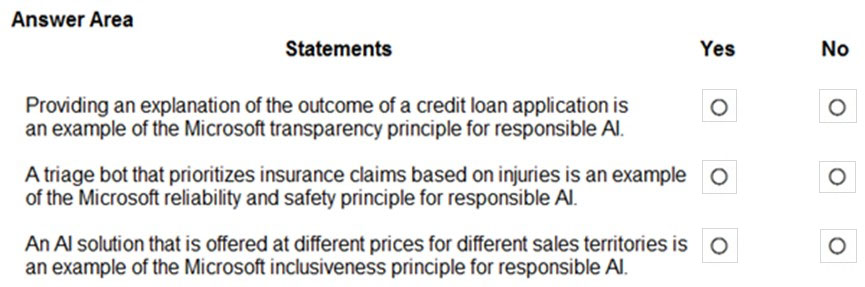
Answer 19
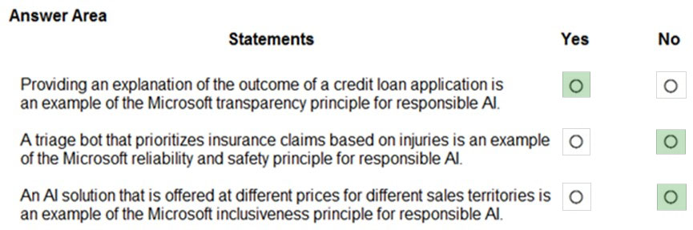
Box 1: Yes -
Achieving transparency helps the team to understand the data and algorithms used to train the model, what transformation logic was applied to the data, the final model generated, and its associated assets. This information offers insights about how the model was created, which allows it to be reproduced in a transparent way.
Box 2: No -
A data holder is obligated to protect the data in an AI system, and privacy and security are an integral part of this system. Personal needs to be secured, and it should be accessed in a way that doesn't compromise an individual's privacy.
Box 3: No -
Inclusiveness mandates that AI should consider all human races and experiences, and inclusive design practices can help developers to understand and address potential barriers that could unintentionally exclude people. Where possible, speech-to-text, text-to-speech, and visual recognition technology should be used to empower people with hearing, visual, and other impairments.
Reference:
https://docs.microsoft.com/en-us/azure/cloud-adoption-framework/innovate/best-practices/trusted-ai
Question 20
DRAG DROP -
Match the principles of responsible AI to appropriate requirements.
To answer, drag the appropriate principles from the column on the left to its requirement on the right. Each principle may be used once, more than once, or not at all. You may need to drag the split bar between panes or scroll to view content.
NOTE: Each correct selection is worth one point.
Select and Place:
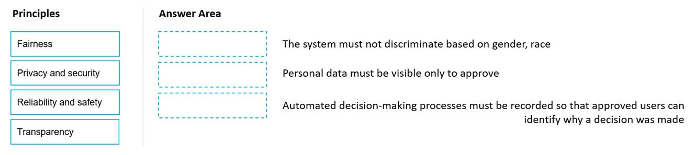
Answer 20
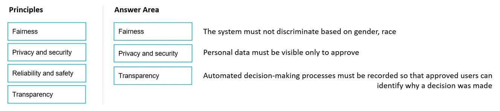
Reference:
Question 21
DRAG DROP -
You plan to deploy an Azure Machine Learning model as a service that will be used by client applications.
Which three processes should you perform in sequence before you deploy the model? To answer, move the appropriate processes from the list of processes to the answer area and arrange them in the correct order.
Select and Place:


Question 22
You are building an AI-based app.
You need to ensure that the app uses the principles for responsible AI.
Which two principles should you follow? Each correct answer presents part of the solution.
NOTE: Each correct selection is worth one point.
A. Implement an Agile software development methodology
B. Implement a process of AI model validation as part of the software review process
C. Establish a risk governance committee that includes members of the legal team, members of the risk management team, and a privacy officer
D. Prevent the disclosure of the use of AI-based algorithms for automated decision making
Answer 22
Correct Answer: B and C
Reference:
Question 23
HOTSPOT -
To complete the sentence, select the appropriate option in the answer area.
Hot Area:

Answer 23
Correct Answer: fairness
Reference:
https://docs.microsoft.com/en-us/azure/cloud-adoption-framework/innovate/best-practices/trusted-ai
Question 24
DRAG DROP -
Match the machine learning tasks to the appropriate scenarios.
To answer, drag the appropriate task from the column on the left to its scenario on the right. Each task may be used once, more than once, or not at all.
NOTE: Each correct selection is worth one point.
Select and Place:

Answer 24

Box 1: Model evaluation -
The Model evaluation module outputs a confusion matrix showing the number of true positives, false negatives, false positives, and true negatives, as well as ROC, Precision/Recall, and Lift curves.
Box 2: Feature engineering -
Feature engineering is the process of using domain knowledge of the data to create features that help ML algorithms learn better. In Azure Machine Learning, scaling and normalization techniques are applied to facilitate feature engineering. Collectively, these techniques and feature engineering are referred to as featurization.
Note: Often, features are created from raw data through a process of feature engineering. For example, a time stamp in itself might not be useful for modeling until the information is transformed into units of days, months, or categories that are relevant to the problem, such as holiday versus working day.
Box 3: Feature selection -
In machine learning and statistics, feature selection is the process of selecting a subset of relevant, useful features to use in building an analytical model. Feature selection helps narrow the field of data to the most valuable inputs. Narrowing the field of data helps reduce noise and improve training performance.
Reference:
https://docs.microsoft.com/en-us/azure/machine-learning/studio/evaluate-model-performance
https://docs.microsoft.com/en-us/azure/machine-learning/concept-automated-ml
Question 25
HOTSPOT -
To complete the sentence, select the appropriate option in the answer area.
Hot Area:

Question 26
You have the Predicted vs. True chart shown in the following exhibit.
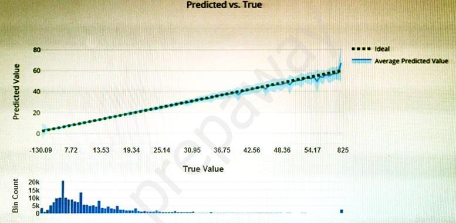
Which type of model is the chart used to evaluate?
A. classification
B. regression
C. clustering
Answer 26
Correct Answer: B
What is a Predicted vs. True chart?
Predicted vs. True shows the relationship between a predicted value and its correlating true value for a regression problem. This graph can be used to measure performance of a model as the closer to the y=x line the predicted values are, the better the accuracy of a predictive model.
Reference:
https://docs.microsoft.com/en-us/azure/machine-learning/how-to-understand-automated-m
Question 27
Which type of machine learning should you use to predict the number of gift cards that will be sold next month?
A. classification
B. regression
C. clustering
Answer 27
Correct Answer: B
In the most basic sense, regression refers to prediction of a numeric target.
Linear regression attempts to establish a linear relationship between one or more independent variables and a numeric outcome, or dependent variable.
You use this module to define a linear regression method, and then train a model using a labeled dataset. The trained model can then be used to make predictions.
Reference:
https://docs.microsoft.com/en-us/azure/machine-learning/studio-module-reference/linear-regression
Question 28
You have a dataset that contains information about taxi journeys that occurred during a given period.
You need to train a model to predict the fare of a taxi journey.
What should you use as a feature?
A. the number of taxi journeys in the dataset
B. the trip distance of individual taxi journeys
C. the fare of individual taxi journeys
D. the trip ID of individual taxi journeys
Answer 28
Correct Answer: B
The label is the column you want to predict. The identified Features are the inputs you give the model to predict the Label.
Example:
The provided data set contains the following columns:
vendor_id: The ID of the taxi vendor is a feature.
rate_code: The rate type of the taxi trip is a feature.
passenger_count: The number of passengers on the trip is a feature. trip_time_in_secs: The amount of time the trip took. You want to predict the fare of the trip before the trip is completed. At that moment, you don't know how long the trip would take. Thus, the trip time is not a feature and you'll exclude this column from the model. trip_distance: The distance of the trip is a feature. payment_type: The payment method (cash or credit card) is a feature. fare_amount: The total taxi fare paid is the label.
Reference:
https://docs.microsoft.com/en-us/dotnet/machine-learning/tutorials/predict-prices
Question 29
You need to predict the sea level in meters for the next 10 years.
Which type of machine learning should you use?
A. classification
B. regression
C. clustering
Answer 29
Correct Answer: B
In the most basic sense, regression refers to prediction of a numeric target.
Linear regression attempts to establish a linear relationship between one or more independent variables and a numeric outcome, or dependent variable.
You use this module to define a linear regression method, and then train a model using a labeled dataset. The trained model can then be used to make predictions.
Reference:
https://docs.microsoft.com/en-us/azure/machine-learning/studio-module-reference/linear-regression
Question 30
HOTSPOT:
For each of the following statements, select Yes if the statement is true. Otherwise, select No.
NOTE: Each correct selection is worth one point.
Hot Area:
| Statements | Yes No |
|---|---|
| Automated machine learning is the process of automating the time-consuming, iterative tasks of machine learning model development. | ⚪️ ⚪️ |
| Automated machine learning can automatically infer the training data from the use case provided. A graphical interface enabling no-code development of machine learning solutions | ⚪️ ⚪️ |
| Automated machine learning works by running multiple training iterations that are scored and ranked by the metrics you specify. | ⚪️ ⚪️ |
| Automated machine learning enables you to specify a dataset and will automatically understand which label to predict. | ⚪️ ⚪️ |
Answer 30
| Statements | Yes No |
|---|---|
| Automated machine learning is the process of automating the time-consuming, iterative tasks of machine learning model development. | 🟢 ⚪️ |
| Automated machine learning can automatically infer the training data from the use case provided. A graphical interface enabling no-code development of machine learning solutions | ⚪️ 🟢️ |
| Automated machine learning works by running multiple training iterations that are scored and ranked by the metrics you specify. | 🟢 ⚪️ |
| Automated machine learning enables you to specify a dataset and will automatically understand which label to predict. | ⚪️ 🟢️ |
Box 1: Yes -
Automated machine learning, also referred to as automated ML or AutoML, is the process of automating the time consuming, iterative tasks of machine learning model development. It allows data scientists, analysts, and developers to build ML models with high scale, efficiency, and productivity all while sustaining model quality.
Box 2: No -
Box 3: Yes -
During training, Azure Machine Learning creates a number of pipelines in parallel that try different algorithms and parameters for you. The service iterates through ML algorithms paired with feature selections, where each iteration produces a model with a training score. The higher the score, the better the model is considered to "fit" your data. It will stop once it hits the exit criteria defined in the experiment.
Box 4: No -
Apply automated ML when you want Azure Machine Learning to train and tune a model for you using the target metric you specify. The label is the column you want to predict.
Reference:
https://azure.microsoft.com/en-us/services/machine-learning/automatedml/#features
Question 31
HOTSPOT -
To complete the sentence, select the appropriate option in the answer area.
Hot Area:

Answer 1
Correct Answer: classification
Two-class classification provides the answer to simple two-choice questions such as Yes/No or True/False.
Question 32
HOTSPOT -
For each of the following statements, select Yes if the statement is true. Otherwise, select No. NOTE: Each correct selection is worth one point.
Hot Area:
| Statements | Yes No |
|---|---|
| Labelling is the process of tagging training data with known values | ⚪️ ⚪️ |
| You should evaluate a model by using the same data used to train the model | ⚪️ ⚪️ |
| Accuracy is always the primary metric used to measure a model's performance | ⚪️ ⚪️ |
Answer 32
| Statements | Yes No |
|---|---|
| Labelling is the process of tagging training data with known values | 🟢 ⚪️ |
| You should evaluate a model by using the same data used to train the model | ⚪️ 🟢️ |
| Accuracy is always the primary metric used to measure a model's performance | ⚪️ 🟢️ |
Box 1: Yes -
In machine learning, if you have labeled data, that means your data is marked up, or annotated, to show the target, which is the answer you want your machine learning model to predict. In general, data labeling can refer to tasks that include data tagging, annotation, classification, moderation, transcription, or processing.
Box 2: No -
Box 3: No -
Accuracy is simply the proportion of correctly classified instances. It is usually the first metric you look at when evaluating a classifier. However, when the test data is unbalanced (where most of the instances belong to one of the classes), or you are more interested in the performance on either one of the classes, accuracy doesn't really capture the effectiveness of a classifier.
Reference:
https://www.cloudfactory.com/data-labeling-guide https://docs.microsoft.com/en-us/azure/machine-learning/studio/evaluate-model-performance
Question 33
Which service should you use to extract text, key/value pairs, and table data automatically from scanned documents?
A. Form Recognizer
B. Text Analytics
C. Language Understanding
D. Custom Vision
Answer 33
Correct Answer: A
Accelerate your business processes by automating information extraction. Form Recognizer applies advanced machine learning to accurately extract text, key/ value pairs, and tables from documents. With just a few samples, Form Recognizer tailors its understanding to your documents, both on-premises and in the cloud. Turn forms into usable data at a fraction of the time and cost, so you can focus more time acting on the information rather than compiling it.
Reference:
https://azure.microsoft.com/en-us/services/cognitive-services/form-recognizer/
Question 34
HOTSPOT -
To complete the sentence, select the appropriate option in the answer area.
Hot Area:

Answer 34
Answer: Form Recognizer
Accelerate your business processes by automating information extraction. Form Recognizer applies advanced machine learning to accurately extract text, key/ value pairs, and tables from documents. With just a few samples, Form Recognizer tailors its understanding to your documents, both on-premises and in the cloud. Turn forms into usable data at a fraction of the time and cost, so you can focus more time acting on the information rather than compiling it.
Reference:
https://azure.microsoft.com/en-us/services/cognitive-services/form-recognizer/
Question 35
You use Azure Machine Learning designer to publish an inference pipeline.
Which two parameters should you use to consume the pipeline? Each correct answer presents part of the solution.
NOTE: Each correct selection is worth one point.
A. the model name
B. the training endpoint
C. the authentication key
D. the REST endpoint
Answer 35
Correct Answer: C and D
You can consume a published pipeline in the Published pipelines page. Select a published pipeline and find the REST endpoint of it.
To consume the pipeline, you need:
-
The REST endpoint for your service
-
The Primary Key for your service
Reference:
Question 36
HOTSPOT -
To complete the sentence, select the appropriate option in the answer area.
Hot Area:

Answer 36
Correct Answer: Aure Kubernetes Service (AKS)
To perform real-time inferencing, you must deploy a pipeline as a real-time endpoint.
Real-time endpoints must be deployed to an Azure Kubernetes Service cluster.
Reference:
https://docs.microsoft.com/en-us/azure/machine-learning/concept-designer#deploy
Question 37
HOTSPOT -
To complete the sentence, select the appropriate option in the answer area.
Hot Area:

Answer 37
Correct Answer: Regression
In the most basic sense, regression refers to prediction of a numeric target.
Linear regression attempts to establish a linear relationship between one or more independent variables and a numeric outcome, or dependent variable.
You use this module to define a linear regression method, and then train a model using a labeled dataset. The trained model can then be used to make predictions.
Incorrect Answers:
-
Classification is a machine learning method that uses data to determine the category, type, or class of an item or row of data.
-
Clustering, in machine learning, is a method of grouping data points into similar clusters. It is also called segmentation.
Over the years, many clustering algorithms have been developed. Almost all clustering algorithms use the features of individual items to find similar items. For example, you might apply clustering to find similar people by demographics. You might use clustering with text analysis to group sentences with similar topics or sentiment.
Reference:
Question 38
For each of the following statements, select Yes if the statement is true. Otherwise, select No.
NOTE: Each correct selection is worth one point.
Hot Area:

Answer 38

Box 1: Yes -
Azure Machine Learning designer lets you visually connect datasets and modules on an interactive canvas to create machine learning models.
Box 2: Yes -
With the designer you can connect the modules to create a pipeline draft.
As you edit a pipeline in the designer, your progress is saved as a pipeline draft.
Box 3: No -
Reference:
https://docs.microsoft.com/en-us/azure/machine-learning/concept-designer
Question 39
HOTSPOT -
You have the following dataset.

You plan to use the dataset to train a model that will predict the house price categories of houses.
What are Household Income and House Price Category? To answer, select the appropriate option in the answer area.
NOTE: Each correct selection is worth one point.
Hot Area:

Answer 39
Correct Answers:
-
A feature
-
A label
Reference:
https://docs.microsoft.com/en-us/azure/machine-learning/studio/interpret-model-results
Question 40
HOTSPOT -
To complete the sentence, select the appropriate option in the answer area.
Hot Area:

Answer 40
Correct Answer: adding and connecting modules on a visual canvas.
Reference:
https://docs.microsoft.com/en-us/azure/machine-learning/concept-designer
Question 41
HOTSPOT -
For each of the following statements, select Yes if the statement is true. Otherwise, select No.
NOTE: Each correct selection is worth one point.
Hot Area:

Answer 41

Reference:
Question 42
A medical research project uses a large anonymized dataset of brain scan images that are categorized into predefined brain haemorrhage types.
You need to use machine learning to support early detection of the different brain haemorrhage types in the images before the images are reviewed by a person.
This is an example of which type of machine learning?
A. clustering
B. regression
C. classification
Answer 42
Correct Answer: C
Reference:
Question 43
When training a model, why should you randomly split the rows into separate subsets?
A. to train the model twice to attain better accuracy
B. to train multiple models simultaneously to attain better performance
C. to test the model by using data that was not used to train the model
Answer 43
Correct Answer: C
Question 44 (Obsolete)
You are evaluating whether to use a basic workspace or an enterprise workspace in Azure Machine Learning.
What are two tasks that require an enterprise workspace? Each correct answer presents a complete solution.
NOTE: Each correct selection is worth one point.
A. Use a graphical user interface (GUI) to run automated machine learning experiments.
B. Create a compute instance to use as a workstation.
C. Use a graphical user interface (GUI) to define and run machine learning experiments from Azure Machine Learning designer.
D. Create a dataset from a comma-separated value (CSV) file.
Answer 44
Correct Answer: A and C
Note: Enterprise workspaces are no longer available as of September 2020. The basic workspace now has all the functionality of the enterprise workspace.
Reference:
https://www.azure.cn/en-us/pricing/details/machine-learning/
https://docs.microsoft.com/en-us/azure/machine-learning/concept-workspace
Question 45
You need to predict the income range of a given customer by using the following dataset.

Which two fields should you use as features? Each correct answer presents a complete solution.
NOTE: Each correct selection is worth one point.
A. Education Level
B. Last Name
C. Age
D. Income Range
E. First Name
Answer 45
Correct Answer: A and C
First Name, Last Name, Age and Education Level are features. Income range is a label (what you want to predict). First Name and Last Name are irrelevant in that they have no bearing on income. Age and Education level are the features you should use.
Question 46
The solution will use a custom model.
Which Azure Cognitive Services service should you use?
A. Custom Vision
B. Form Recognizer
C. Face
D. Computer Vision
Answer 46
Correct Answer: A
Reference:
https://docs.microsoft.com/en-us/azure/cognitive-services/custom-vision-service/overview
Question 47
HOTSPOT -
For each of the following statements, select Yes if the statement is true. Otherwise, select No.
NOTE: Each correct selection is worth one point.
Hot Area:
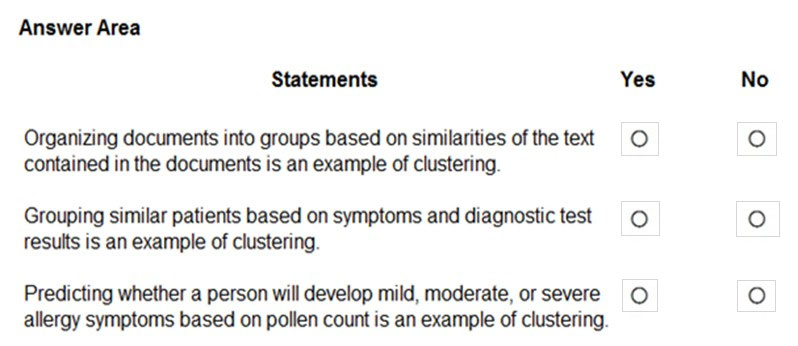
Answer 47
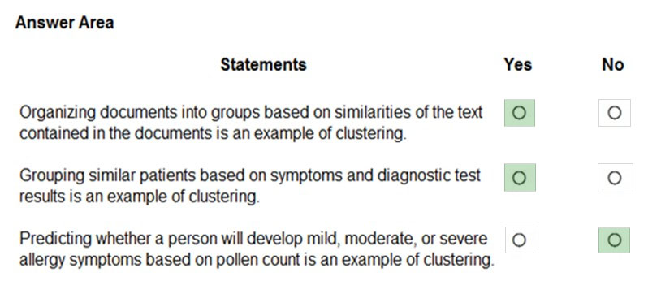
Clustering is a machine learning task that is used to group instances of data into clusters that contain similar characteristics. Clustering can also be used to identify relationships in a dataset
Regression is a machine learning task that is used to predict the value of the label from a set of related features.
Reference:
https://docs.microsoft.com/en-us/dotnet/machine-learning/resources/tasks
Question 48
HOTSPOT -
For each of the following statements, select Yes if the statement is true. Otherwise, select No.
NOTE: Each correct selection is worth one point.
Hot Area:
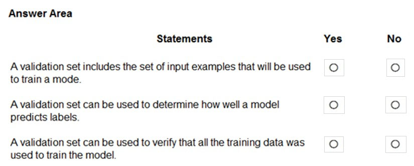
Answer 48
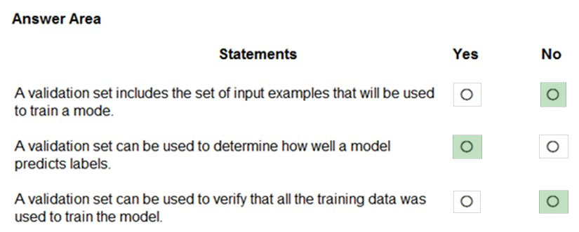
Box 1: No -
The validation dataset is different from the test dataset that is held back from the training of the model.
Box 2: Yes -
A validation dataset is a sample of data that is used to give an estimate of model skill while tuning modelג€™s hyperparameters.
Box 3: No -
The Test Dataset, not the validation set, used for this. The Test Dataset is a sample of data used to provide an unbiased evaluation of a final model fit on the training dataset.
Reference:
https://machinelearningmastery.com/difference-test-validation-datasets/
Question 49
What are two metrics that you can use to evaluate a regression model? Each correct answer presents a complete solution.
NOTE: Each correct selection is worth one point.
A. coefficient of determination (R2)
B. F1 score
C. root mean squared error (RMSE)
D. area under curve (AUC)
E. balanced accuracy
Answer 49
Correct Answer: A and C
A: R-squared (R2), or Coefficient of determination represents the predictive power of the model as a value between -inf and 1.00. 1.00 means there is a perfect fit, and the fit can be arbitrarily poor so the scores can be negative.
C: RMS-loss or Root Mean Squared Error (RMSE) (also called Root Mean Square Deviation, RMSD), measures the difference between values predicted by a model and the values observed from the environment that is being modeled.
Incorrect Answers:
B: F1 score also known as balanced F-score or F-measure is used to evaluate a classification model.
D: aucROC or area under the curve (AUC) is used to evaluate a classification model.
Reference:
https://docs.microsoft.com/en-us/dotnet/machine-learning/resources/metrics
Question 50
HOTSPOT -
To complete the sentence, select the appropriate option in the answer area.
Hot Area:
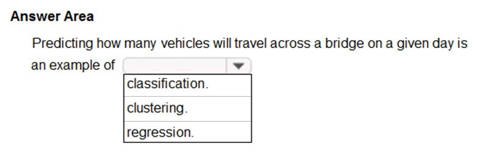
Answer 50
Correct Answer: regression
Regression is a machine learning task that is used to predict the value of the label from a set of related features.
Reference:
https://docs.microsoft.com/en-us/dotnet/machine-learning/resources/tasks
Question 51
DRAG DROP -
You need to use Azure Machine Learning designer to build a model that will predict automobile prices.
Which type of modules should you use to complete the model? To answer, drag the appropriate modules to the correct locations. Each module may be used once, more than once, or not at all. You may need to drag the split bar between panes or scroll to view content.
NOTE: Each correct selection is worth one point.
Select and Place:
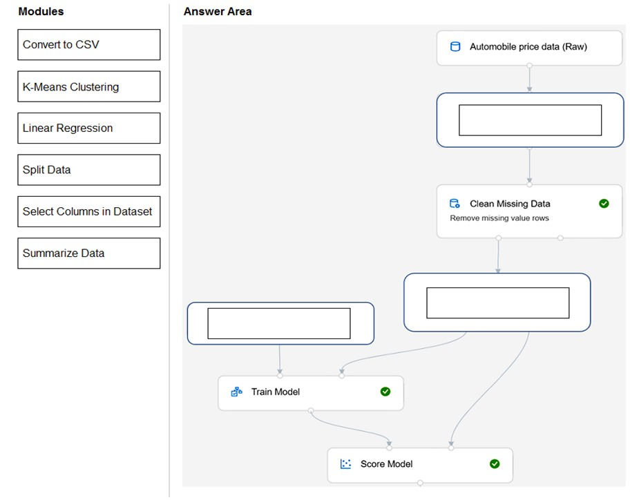
Answer 51

Box 1: Select Columns in Dataset
For Columns to be cleaned, choose the columns that contain the missing values you want to change. You can choose multiple columns, but you must use the same replacement method in all selected columns.
Example:
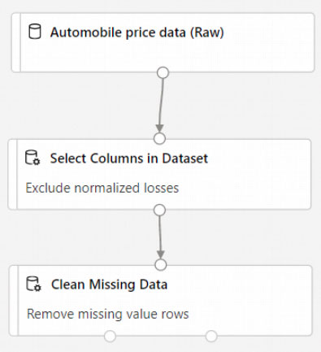
Box 2: Split data -
Splitting data is a common task in machine learning. You will split your data into two separate datasets. One dataset will train the model and the other will test how well the model performed.
Box 3: Linear regression -
Because you want to predict price, which is a number, you can use a regression algorithm. For this example, you use a linear regression model.
Reference:
Question 52
Which type of machine learning should you use to identify groups of people who have similar purchasing habits?
A. classification
B. regression
C. clustering
Answer 52
Correct Answer: C
Clustering is a machine learning task that is used to group instances of data into clusters that contain similar characteristics. Clustering can also be used to identify relationships in a dataset
Reference:
https://docs.microsoft.com/en-us/dotnet/machine-learning/resources/tasks
Question 53
HOTSPOT -
To complete the sentence, select the appropriate option in the answer area.
Hot Area:
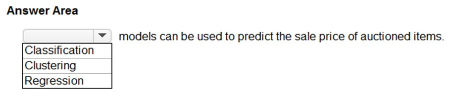
Answer 53
Correct Answer: Regression
Regression is a machine learning task that is used to predict the value of the label from a set of related features.
Reference:
https://docs.microsoft.com/en-us/dotnet/machine-learning/resources/tasks
Question 54
Which metric can you use to evaluate a classification model?
A. true positive rate
B. mean absolute error (MAE)
C. coefficient of determination (R2)
D. root mean squared error (RMSE)
Answer 54
Correct Answer: A
What does a good model look like?
An ROC curve that approaches the top left corner with 100% true positive rate and 0% false positive rate will be the best model. A random model would display as a flat line from the bottom left to the top right corner. Worse than random would dip below the y=x line.
Reference:
Question 55
Which two components can you drag onto a canvas in Azure Machine Learning designer? Each correct answer presents a complete solution.
NOTE: Each correct selection is worth one point.
A. dataset
B. compute
C. pipeline
D. module
Answer 55
Correct Answer: A and D
You can drag-and-drop datasets and modules onto the canvas.
Reference:
https://docs.microsoft.com/en-us/azure/machine-learning/concept-designer
Question 56
You need to create a training dataset and validation dataset from an existing dataset.
Which module in the Azure Machine Learning designer should you use?
A. Select Columns in Dataset
B. Add Rows
C. Split Data
D. Join Data
Answer 56
Correct Answer: C
A common way of evaluating a model is to divide the data into a training and test set by using Split Data, and then validate the model on the training data.
Use the Split Data module to divide a dataset into two distinct sets.
The studio currently supports training/validation data splits
Reference:
Question 57
DRAG DROP -
Match the types of machine learning to the appropriate scenarios.
To answer, drag the appropriate machine learning type from the column on the left to its scenario on the right. Each machine learning type may be used once, more than once, or not at all.
NOTE: Each correct selection is worth one point.
Select and Place:
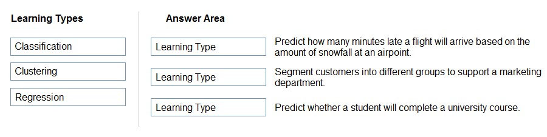
Answer 57
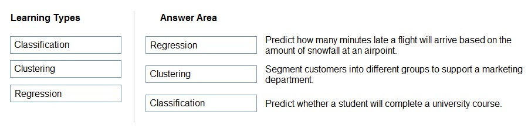
Box 1: Regression -
In the most basic sense, regression refers to prediction of a numeric target.
Linear regression attempts to establish a linear relationship between one or more independent variables and a numeric outcome, or dependent variable.
You use this module to define a linear regression method, and then train a model using a labeled dataset. The trained model can then be used to make predictions.
Box 2: Clustering -
Clustering, in machine learning, is a method of grouping data points into similar clusters. It is also called segmentation.
Over the years, many clustering algorithms have been developed. Almost all clustering algorithms use the features of individual items to find similar items. For example, you might apply clustering to find similar people by demographics. You might use clustering with text analysis to group sentences with similar topics or sentiment.
Box 3: Classification -
Two-class classification provides the answer to simple two-choice questions such as Yes/No or True/False.
Reference:
https://docs.microsoft.com/en-us/azure/machine-learning/studio-module-reference/linear-regression
Question 58
HOTSPOT -
To complete the sentence, select the appropriate option in the answer area.
Hot Area:

Answer 58
Correct Answer: Accuracy
Reference:
Question 59
HOTSPOT -
To complete the sentence, select the appropriate option in the answer area.
Hot Area:

Answer 59
Correct Answer: a reliability and safety
Reference:
https://docs.microsoft.com/en-us/azure/cloud-adoption-framework/innovate/best-practices/trusted-ai
Question 60
HOTSPOT -
To complete the sentence, select the appropriate option in the answer area.
Hot Area:

Answer 60
Corrector Answer: feature selection.
Reference:
https://docs.microsoft.com/en-us/azure/architecture/data-science-process/create-features
Question 61
HOTSPOT -
To complete the sentence, select the appropriate option in the answer area.
Hot Area:

Answer 61
Correct Answer: labeling.
Reference:
https://docs.microsoft.com/en-us/azure/machine-learning/how-to-label-data
Question 62
Your company wants to build a recycling machine for bottles. The recycling machine must automatically identify bottles of the correct shape and reject all other items.
Which type of AI workload should the company use?
A. anomaly detection
B. conversational AI
C. computer vision
D. natural language processing
Answer 62
Correct Answer: C
Azure's Computer Vision service gives you access to advanced algorithms that process images and return information based on the visual features you're interested in. For example, Computer Vision can determine whether an image contains adult content, find specific brands or objects, or find human faces.
Reference:
https://docs.microsoft.com/en-us/azure/cognitive-services/computer-vision/overview
Question 63
HOTSPOT -
For each of the following statements, select Yes if the statement is true. Otherwise, select No.
NOTE: Each correct selection is worth one point.
Hot Area:

Answer 63

Reference:
Question 64
In which two scenarios can you use the Form Recognizer service? Each correct answer presents a complete solution.
NOTE: Each correct selection is worth one point.
A. Extract the invoice number from an invoice.
B. Translate a form from French to English.
C. Find image of product in a catalog.
D. Identify the retailer from a receipt.
Answer 64
Correct Answer: A and D
Reference:
https://azure.microsoft.com/en-gb/services/cognitive-services/form-recognizer/#features
Question 65
HOTSPOT -
You have a database that contains a list of employees and their photos.
You are tagging new photos of the employees.
For each of the following statements select Yes if the statement is true. Otherwise, select No.
NOTE: Each correct selection is worth one point.
Hot Area:
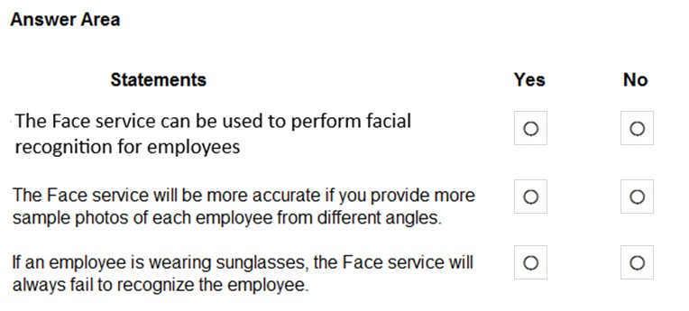
Answer 65
Correct Answer: Yes / Yes / No
Reference:
https://docs.microsoft.com/en-us/azure/cognitive-services/face/overview
https://docs.microsoft.com/en-us/azure/cognitive-services/face/concepts/face-detection
Question 66
You need to develop a mobile app for employees to scan and store their expenses while travelling.
Which type of computer vision should you use?
A. semantic segmentation
B. image classification
C. object detection
D. optical character recognition (OCR)
Answer 66
Correct Answer: D
Azure's Computer Vision API includes Optical Character Recognition (OCR) capabilities that extract printed or handwritten text from images. You can extract text from images, such as photos of license plates or containers with serial numbers, as well as from documents - invoices, bills, financial reports, articles, and more.
Reference:
https://docs.microsoft.com/en-us/azure/cognitive-services/computer-vision/concept-recognizing-text
Question 67
HOTSPOT -
For each of the following statements, select Yes if the statement is true. Otherwise, select No.
NOTE: Each correct selection is worth one point.
Hot Area:

Answer 67

Box 1: Yes -
Custom Vision functionality can be divided into two features. Image classification applies one or more labels to an image. Object detection is similar, but it also returns the coordinates in the image where the applied label(s) can be found.
Box 2: Yes -
The Custom Vision service uses a machine learning algorithm to analyze images. You, the developer, submit groups of images that feature and lack the characteristics in question. You label the images yourself at the time of submission. Then, the algorithm trains to this data and calculates its own accuracy by testing itself on those same images.
Box 3: No -
Custom Vision service can be used only on graphic files.
Reference:
https://docs.microsoft.com/en-us/azure/cognitive-services/Custom-Vision-Service/overview
Question 68
You are processing photos of runners in a race.
You need to read the numbers on the runners' shirts to identity the runners in the photos.
Which type of computer vision should you use?
A. facial recognition
B. optical character recognition (OCR)
C. semantic segmentation
D. object detection
Answer 68
Correct Answer: B
Optical character recognition (OCR) allows you to extract printed or handwritten text from images and documents.
Reference:
https://docs.microsoft.com/en-us/azure/cognitive-services/computer-vision/overview-ocr
Question 69
DRAG DROP -
Match the types of machine learning to the appropriate scenarios.
To answer, drag the appropriate machine learning type from the column on the left to its scenario on the right. Each machine learning type may be used once, more than once, or not at all.
NOTE: Each correct selection is worth one point.
Select and Place:

Answer 69

Box 1: Image classification -
Image classification is a supervised learning problem: define a set of target classes (objects to identify in images), and train a model to recognize them using labeled example photos.
Box 2: Object detection -
Object detection is a computer vision problem. While closely related to image classification, object detection performs image classification at a more granular scale. Object detection both locates and categorizes entities within images.
Box 3: Semantic Segmentation -
Semantic segmentation achieves fine-grained inference by making dense predictions inferring labels for every pixel, so that each pixel is labeled with the class of its enclosing object ore region.
Reference:
https://developers.google.com/machine-learning/practica/image-classification
https://docs.microsoft.com/en-us/dotnet/machine-learning/tutorials/object-detection-model-builder
https://nanonets.com/blog/how-to-do-semantic-segmentation-using-deep-learning/
Question 70
You use drones to identify where weeds grow between rows of crops to send an instruction for the removal of the weeds.
This is an example of which type of computer vision?
A. object detection
B. optical character recognition (OCR)
C. scene segmentation
Answer 70
Correct Answer: A
Object detection is similar to tagging, but the API returns the bounding box coordinates for each tag applied. For example, if an image contains a dog, cat and person, the Detect operation will list those objects together with their coordinates in the image.
Incorrect Answers:
B: Optical character recognition (OCR) allows you to extract printed or handwritten text from images and documents.
C: Scene segmentation determines when a scene changes in video based on visual cues. A scene depicts a single event and it's composed by a series of consecutive shots, which are semantically related.
Reference:
https://docs.microsoft.com/en-us/ai-builder/object-detection-overview
https://docs.microsoft.com/en-us/azure/cognitive-services/computer-vision/overview-ocr
Question 71
DRAG DROP -
Match the facial recognition tasks to the appropriate questions.
To answer, drag the appropriate task from the column on the left to its question on the right. Each task may be used once, more than once, or not at all.
NOTE: Each correct selection is worth one point.
Select and Place:

Answer 71

Box 1: verification -
Face verification: Check the likelihood that two faces belong to the same person and receive a confidence score.
Box 2: similarity -
Box 3: Grouping -
Box 4: identification -
Face detection: Detect one or more human faces along with attributes such as: age, emotion, pose, smile, and facial hair, including 27 landmarks for each face in the image.
Reference:
https://azure.microsoft.com/en-us/services/cognitive-services/face/#features
Question 72
DRAG DROP -
Match the types of computer vision workloads to the appropriate scenarios.
To answer, drag the appropriate workload type from the column on the left to its scenario on the right. Each workload type may be used once, more than once, or not at all.
NOTE: Each correct selection is worth one point.
Select and Place:
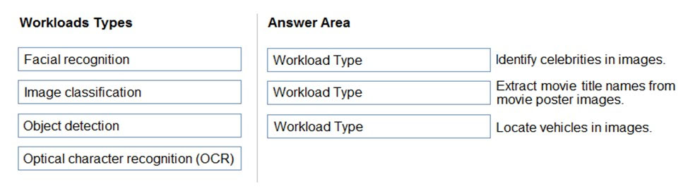
Answer 72
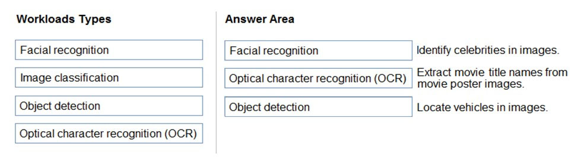
Box 1: Facial recognition -
Face detection that perceives faces and attributes in an image; person identification that matches an individual in your private repository of up to 1 million people; perceived emotion recognition that detects a range of facial expressions like happiness, contempt, neutrality, and fear; and recognition and grouping of similar faces in images.
Box 2: OCR -
Box 3: Objection detection -
Object detection is similar to tagging, but the API returns the bounding box coordinates (in pixels) for each object found. For example, if an image contains a dog, cat and person, the Detect operation will list those objects together with their coordinates in the image. You can use this functionality to process the relationships between the objects in an image. It also lets you determine whether there are multiple instances of the same tag in an image.
The Detect API applies tags based on the objects or living things identified in the image. There is currently no formal relationship between the tagging taxonomy and the object detection taxonomy. At a conceptual level, the Detect API only finds objects and living things, while the Tag API can also include contextual terms like "indoor", which can't be localized with bounding boxes.
Reference:
Question 73
You need to determine the location of cars in an image so that you can estimate the distance between the cars.
Which type of computer vision should you use?
A. optical character recognition (OCR)
B. object detection
C. image classification
D. face detection
Answer 73
Correct Answer: B
Object detection is similar to tagging, but the API returns the bounding box coordinates (in pixels) for each object found. For example, if an image contains a dog, cat and person, the Detect operation will list those objects together with their coordinates in the image. You can use this functionality to process the relationships between the objects in an image. It also lets you determine whether there are multiple instances of the same tag in an image.
The Detect API applies tags based on the objects or living things identified in the image. There is currently no formal relationship between the tagging taxonomy and the object detection taxonomy. At a conceptual level, the Detect API only finds objects and living things, while the Tag API can also include contextual terms like "indoor", which can't be localized with bounding boxes.
Reference:
https://docs.microsoft.com/en-us/azure/cognitive-services/computer-vision/concept-object-detection
Question 74
HOTSPOT -
To complete the sentence, select the appropriate option in the answer area.
Hot Area:

Answer 74
Correct Answer: Custom Vision
Azure Custom Vision is a cognitive service that lets you build, deploy, and improve your own image classifiers. An image classifier is an AI service that applies labels (which represent classes) to images, according to their visual characteristics. Unlike the Computer Vision service, Custom Vision allows you to specify the labels to apply.
Note: The Custom Vision service uses a machine learning algorithm to apply labels to images. You, the developer, must submit groups of images that feature and lack the characteristics in question. You label the images yourself at the time of submission. Then the algorithm trains to this data and calculates its own accuracy by testing itself on those same images. Once the algorithm is trained, you can test, retrain, and eventually use it to classify new images according to the needs of your app. You can also export the model itself for offline use.
Incorrect Answers:
Computer Vision:
Azure's Computer Vision service provides developers with access to advanced algorithms that process images and return information based on the visual features you're interested in. For example, Computer Vision can determine whether an image contains adult content, find specific brands or objects, or find human faces.
Reference:
https://docs.microsoft.com/en-us/azure/cognitive-services/custom-vision-service/home
Question 75
You send an image to a Computer Vision API and receive back the annotated image shown in the exhibit.
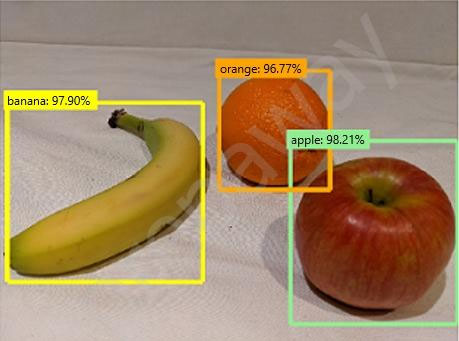
Which type of computer vision was used?
A. object detection
B. semantic segmentation
C. optical character recognition (OCR)
D. image classification
Answer 75
Correct Answer: A
Object detection is similar to tagging, but the API returns the bounding box coordinates (in pixels) for each object found. For example, if an image contains a dog, cat and person, the Detect operation will list those objects together with their coordinates in the image. You can use this functionality to process the relationships between the objects in an image. It also lets you determine whether there are multiple instances of the same tag in an image.
The Detect API applies tags based on the objects or living things identified in the image. There is currently no formal relationship between the tagging taxonomy and the object detection taxonomy. At a conceptual level, the Detect API only finds objects and living things, while the Tag API can also include contextual terms like "indoor", which can't be localized with bounding boxes.
Reference:
https://docs.microsoft.com/en-us/azure/cognitive-services/computer-vision/concept-object-detection
Question 76
What are two tasks that can be performed by using the Computer Vision service? Each correct answer presents a complete solution.
NOTE: Each correct selection is worth one point.
A. Train a custom image classification model.
B. Detect faces in an image.
C. Recognize handwritten text.
D. Translate the text in an image between languages.
Answer 76
Correct Answer: B and C
B: Azure's Computer Vision service provides developers with access to advanced algorithms that process images and return information based on the visual features you're interested in. For example, Computer Vision can determine whether an image contains adult content, find specific brands or objects, or find human faces.
C: Computer Vision includes Optical Character Recognition (OCR) capabilities. You can use the new Read API to extract printed and handwritten text from images and documents.
Reference:
https://docs.microsoft.com/en-us/azure/cognitive-services/computer-vision/home
Question 77
What is a use case for classification?
A. predicting how many cups of coffee a person will drink based on how many hours the person slept the previous night.
B. analyzing the contents of images and grouping images that have similar colors
C. predicting whether someone uses a bicycle to travel to work based on the distance from home to work
D. predicting how many minutes it will take someone to run a race based on past race times
Answer 77
Correct Answer: B
Classification is a machine learning method that uses data to determine the category, type, or class of an item or row of data.
Reference:
https://docs.microsoft.com/en-us/azure/machine-learning/algorithm-module-reference/linear-regression
Question 78
Your website has a chatbot to assist customers.
You need to detect when a customer is upset based on what the customer types in the chatbot.
Which type of AI workload should you use?
A. anomaly detection
B. semantic segmentation
C. regression
D. natural language processing
Answer 78
Correct Answer: D
Natural language processing (NLP) is used for tasks such as sentiment analysis, topic detection, language detection, key phrase extraction, and document categorization.
Sentiment Analysis is the process of determining whether a piece of writing is positive, negative or neutral.
Reference:
Question 79
Which AI service can you use to interpret the meaning of a user input such as "Call me back later?"
A. Translator Text
B. Text Analytics
C. Speech
D. Language Understanding (LUIS)
Answer 79
Correct Answer: B
Text Analytics is an AI service that uncovers insights such as sentiment, entities, and key phrases in unstructured text.
Incorrect Answers:
D: Language Understanding (LUIS) is a cloud-based API service, not an AI service, that applies custom machine-learning intelligence to a user's conversational, natural language text to predict overall meaning, and pull out relevant, detailed information.
Reference:
https://azure.microsoft.com/en-us/services/cognitive-services/text-analytics/
https://docs.microsoft.com/en-us/azure/cognitive-services/luis/what-is-luis
Question 80
You are developing a chatbot solution in Azure.
Which service should you use to determine a user's intent?
A. Translator Text
B. QnA Maker
C. Speech
D. Language Understanding (LUIS)
Answer 80
Correct Answer D
Language Understanding (LUIS) is a cloud-based API service that applies custom machine-learning intelligence to a user's conversational, natural language text to predict overall meaning, and pull out relevant, detailed information.
Design your LUIS model with categories of user intentions called intents. Each intent needs examples of user utterances. Each utterance can provide data that needs to be extracted with machine-learning entities.
Reference:
https://docs.microsoft.com/en-us/azure/cognitive-services/luis/what-is-luis
Question 81
You need to make the press releases of your company available in a range of languages.
Which service should you use?
A. Translator Text
B. Text Analytics
C. Speech
D. Language Understanding (LUIS)
Answer 81
Correct Answer: A
Translator is a cloud-based machine translation service you can use to translate text in near real-time through a simple REST API call. The service uses modern neural machine translation technology and offers statistical machine translation technology. Custom Translator is an extension of Translator, which allows you to build neural translation systems.
Reference:
https://docs.microsoft.com/en-us/azure/cognitive-services/translator/
Question 82
You are developing a natural language processing solution in Azure. The solution will analyze customer reviews and determine how positive or negative each review is.
This is an example of which type of natural language processing workload?
A. language detection
B. sentiment analysis
C. key phrase extraction
D. entity recognition
Answer 82
Correct Answer: B
Sentiment Analysis is the process of determining whether a piece of writing is positive, negative or neutral.
Reference:
Question 83
You use natural language processing to process text from a Microsoft news story.
You receive the output shown in the following exhibit.
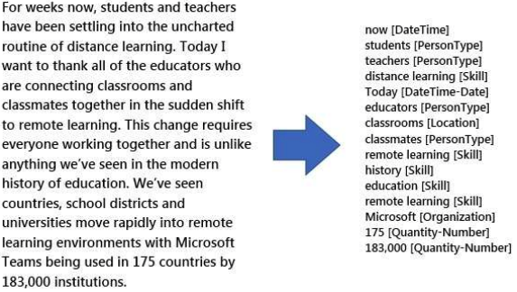
Which type of natural languages processing was performed?
A. entity recognition
B. key phrase extraction
C. sentiment analysis
D. translation
Answer 83
Correct Answer: B
Key phrase extraction/ Broad entity extraction: Identify important concepts in text, including key phrases and named entities such as people, places, and organizations.
Reference:
https://azure.microsoft.com/en-us/services/cognitive-services/text-analytics
Question 84
You are developing a solution that uses the Text Analytics service.
You need to identify the main talking points in a collection of documents.
Which type of natural language processing should you use?
A. entity recognition
B. key phrase extraction
C. sentiment analysis
D. language detection
Answer 84
Correct Answer: B
Broad entity extraction: Identify important concepts in text, including key Key phrase extraction/ Broad entity extraction:
Identify important concepts in text, including key phrases and named entities such as people, places, and organizations.
Reference:
Question 85
In which two scenarios can you use speech recognition? Each correct answer presents a complete solution.
NOTE: Each correct selection is worth one point.
A. an in-car system that reads text messages aloud
B. providing closed captions for recorded or live videos
C. creating an automated public address system for a train station
D. creating a transcript of a telephone call or meeting
Answer 85
Correct Answer: B and D
https://azure.microsoft.com/en-gb/services/cognitive-services/speech-to-text/#features
Question 86
You need to build an app that will read recipe instructions aloud to support users who have reduced vision.
Which version service should you use?
A. Text Analytics
B. Translator Text
C. Speech
D. Language Understanding (LUIS)
Answer 86
Correct Answer: C
https://azure.microsoft.com/en-us/services/cognitive-services/text-to-speech/#features
Question 87
Which two scenarios are examples of a conversational AI workload? Each correct answer presents a complete solution.
NOTE: Each correct selection is worth one point.
A. a telephone answering service that has a pre-recorder message
B. a chatbot that provides users with the ability to find answers on a website by themselves
C. telephone voice menus to reduce the load on human resources
D. a service that creates frequently asked questions (FAQ) documents by crawling public websites
Answer 87
Correct Answer: B and C
B: A bot is an automated software program designed to perform a particular task. Think of it as a robot without a body.
C: Automated customer interaction is essential to a business of any size. In fact, 61% of consumers prefer to communicate via speech, and most of them prefer self-service. Because customer satisfaction is a priority for all businesses, self-service is a critical facet of any customer-facing communications strategy.
Incorrect Answers:
D: Early bots were comparatively simple, handling repetitive and voluminous tasks with relatively straightforward algorithmic logic. An example would be web crawlers used by search engines to automatically explore and catalog web content.
Reference:
https://docs.microsoft.com/en-us/azure/architecture/data-guide/big-data/ai-overview
Question 88
You need to provide content for a business chatbot that will help answer simple user queries.
What are three ways to create question and answer text by using QnA Maker? Each correct answer presents a complete solution.
NOTE: Each correct selection is worth one point.
A. Generate the questions and answers from an existing webpage.
B. Use automated machine learning to train a model based on a file that contains the questions.
C. Manually enter the questions and answers.
D. Connect the bot to the Cortana channel and ask questions by using Cortana.
E. Import chit-chat content from a predefined data source.
Answer 88
Correct Answer: A, C, and E
Automatic extraction
Extract question-answer pairs from semi-structured content, including FAQ pages, support websites, excel files,
SharePoint documents, product manuals and policies.
Reference:
https://docs.microsoft.com/en-us/azure/cognitive-services/qnamaker/concepts/content-types
Question 89
You have a frequently asked questions (FAQ) PDF file.
You need to create a conversational support system based on the FAQ.
Which service should you use?
A. QnA Maker
B. Text Analytics
C. Computer Vision
D. Language Understanding (LUIS)
Answer 89
Correct Answer: A
Question 90
You need to reduce the load on telephone operators by implementing a chatbot to answer simple questions with predefined answers.
Which two AI service should you use to achieve the goal? Each correct answer presents part of the solution.
NOTE: Each correct selection is worth one point.
A. Text Analytics
B. QnA Maker
C. Azure Bot Service
D. Translator Text
Answer 90
Correct Answer: B and C
Bots are a popular way to provide support through multiple communication channels. You can use the QnA Maker service and Azure Bot Service to create a bot that answers user questions.
Reference:
https://docs.microsoft.com/en-us/learn/modules/build-faq-chatbot-qna-maker-azure-bot-service/
Question 91
Which two scenarios are examples of a conversational AI workload? Each correct answer presents a complete solution.
NOTE: Each correct selection is worth one point.
A. a smart device in the home that responds to questions such as "What will the weather be like today?"
B. a website that uses a knowledge base to interactively respond to users' questions
C. assembly line machinery that autonomously inserts headlamps into cars
D. monitoring the temperature of machinery to turn on a fan when the temperature reaches a specific threshold
Answer 91
Correct Answer: A and B
Question 92
You have the process shown in the following exhibit.
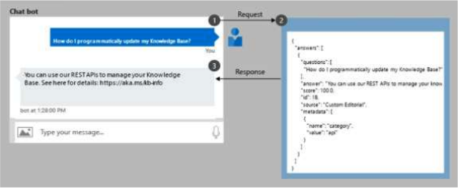
Which type AI solution is shown in the diagram?
A. a sentiment analysis solution
B. a chatbot
C. a machine learning model
D. a computer vision application
Answer 92
Correct Answer: B
Question 93
You need to develop a web-based AI solution for a customer support system. Users must be able to interact with a web app that will guide them to the best resource or answer.
Which service should you use?
A. Custom Vision
B. QnA Maker
C. Translator Text
D. Face
Answer 93
Correct Answer: B
QnA Maker is a cloud-based API service that lets you create a conversational question-and-answer layer over your existing data. Use it to build a knowledge base by extracting questions and answers from your semi-structured content, including FAQs, manuals, and documents. Answer users' questions with the best answers from the QnAs in your knowledge base--automatically. Your knowledge base gets smarter, too, as it continually learns from user behavior.
Incorrect Answers:
A: Azure Custom Vision is a cognitive service that lets you build, deploy, and improve your own image classifiers. An image classifier is an AI service that applies labels (which represent classes) to images, according to their visual characteristics. Unlike the Computer Vision service, Custom Vision allows you to specify the labels to apply.
D: Azure Cognitive Services Face Detection API: At a minimum, each detected face corresponds to a faceRectangle field in the response. This set of pixel coordinates for the left, top, width, and height mark the located face. Using these coordinates, you can get the location of the face and its size. In the API response, faces are listed in size order from largest to smallest.
Reference:
https://azure.microsoft.com/en-us/services/cognitive-services/qna-maker/
Question 94
Which AI service should you use to create a bot from a frequently asked questions (FAQ) document?
A. QnA Maker
B. Language Understanding (LUIS)
C. Text Analytics
D. Speech
Answer 94
Correct Answer: A
Question 95
Which scenario is an example of a webchat bot?
A. Determine whether reviews entered on a website for a concert are positive or negative, and then add a thumbs up or thumbs down emoji to the reviews.
B. Translate into English questions entered by customers at a kiosk so that the appropriate person can call the customers back.
C. Accept questions through email, and then route the email messages to the correct person based on the content of the message.
D. From a website interface, answer common questions about scheduled events and ticket purchases for a music festival.
Answer 95
Correct Answer: D
Question 96
You own a service desk company and employs a team of customer service agents to provide telephone and email support to customers.
Now you are planning to develop a web chatbot to automatically answer common customer queries. What business benefit the does owner expect as a result of the web chatbot?
A. Increase sales
B. Reduced workload for the customer service agents
C. Improve product reliability
Answer 96
Correct Answer: B
Question 97
____ is the average of absolute differences between prediction and actual observation where all individual differences have equal weight.
Select the appropriate regression performance metrics from below to complete the sentence.
A. Coefficient of Determination (R2)
B. Relative Squared Error (RSE)
C. Relative Absolute Error (RAE)
D. Mean Absolute Error (MAE)
Answer 97
Correct Answer: D
Question 98
You are working as a cloud consultant for a major retail company. You are planning to create a bot from a frequently asked questions (FAQ) document. You found out that Microsoft Azure AI has many services that can help in creating a bot seamlessly.
Which azure AI service should you use?
A. QnA Maker
B. Language understanding
C. Speech
D. Text analysis
Answer 98
Correct Answer: A
Question 99
To complete the following sentence, select the appropriate option from the drop-down menu. ____ is a process in which the best machine learning algorithm to use for your specific data is selected for you.
A. Automated machine learning (AutoML)
B. Normalization
C. Feature engineering
Answer 99
Correct Answer: A
AutoML is a process in which the best machine learning algorithm to use for your specific data is selected for you.
AutoML tries different algorithms and tuning parameters in parallel while training a model and stops once it reaches predefined exit criteria. Generated output provides the list of used algorithms along with recommendations on the best ones to use.
Incorrect Answers
Normalization is a technique used to change the values in numeric columns to bring them up to the common scale; to the values ranging between 0 and 1, without loss of information or differences in the value ranges.
Feature engineering is a process of creating new features from within provided input dataset, which can help to better represent relationships and correlations between the input data and expected outcome.
Feature engineering improves the quality and performance of the trained model and increases its predictive power.
Question 100
You build a QnA Maker bot by using a frequently asked questions (FAQ) page.
You need to add professional greetings and other responses to make the bot more user friendly.
What should you do?
A. Increase the confidence threshold of responses
B. Enable active learning
C. Create multi-turn questions
D. Add chit-chat
Answer 100
Correct Answer: D
Reference
Question 101
Which two of these sources can you translate from one language into another? Each correct answer presents a complete solution.
Choose the correct answers
A. Text
B. Speech
C. Image
D. Video
E. Handwriting
Answer 101
Correct Answer: A and B
Text translation translates the text documents from one language into another language.
Speech translation translates spoken audio from one language into another language.
Converting handwriting to text is an example of Optical character recognition (OCR). OCR extracts handwritten text from an image. You can use text translation with the output from OCR.
Extracting the text in an image is also an example of Optical character recognition (OCR). OCR can recognize individual shapes as letters, numerals, punctuation, and other elements of text. OCR extracts the recognizable text from an image. You can use text translation with the output from OCR.
Videos can be analyzed and the spoken audio transcribed into text with media services. You can use text translation with the output from media services.
Question 102
Drag and Drop Question
Match the computer vision type to the scenario. To answer, drag the appropriate type to each scenario. A type may be used once, more than once, or not at all.
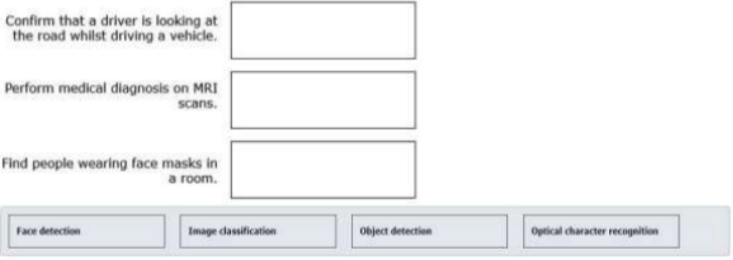
Answer 102
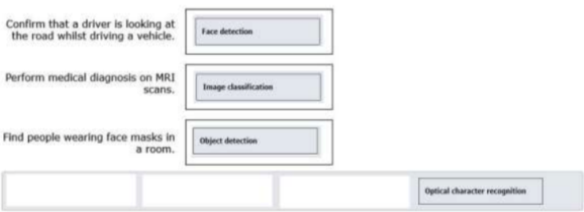
Face detection can be used to monitor a driver's face. The angle of the head can be determined and used to tell if the driver is looking at the road ahead, or looking down at a mobile device, or if the driver is showing signs of tiredness. Image classification can be used to evaluate scanned images from MRI machines to classify the images against trained images of known medical conditions.
Object detection can be used to detect objects in an image. You can train Computer Vision to detect face masks. Face detection does not include the ability to recognize that a face is covered with a mask. Masks may actually prevent faces from being recognized.
Optical character recognition (OCR) extracts text from an image. OCR can recognize individual shapes as letters, numerals, punctuation, and other elements of text.
Question 103
Hotspot Question
For each of the following statements, select Yes if the statement is true. Otherwise, select No.
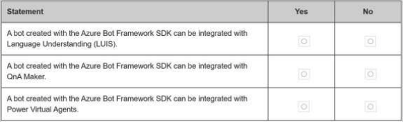
Answer 103
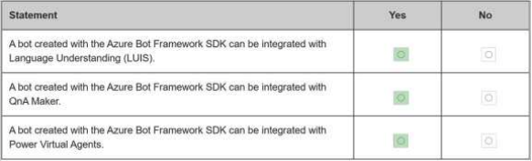
Box 1: Yes
A bot created with the Azure Bot Framework SDK can be integrated with LUIS. You can add LUIS to your bot when you create the bot, or add LUIS later. You use the Dispatch tool to route messages from the bot to LUIS.
A bot created with the Azure Bot Framework SDK can be integrated with QnA Maker knowledge bases. You use the
Box 2: Yes
Dispatch tool to route messages from the bot to QnA Maker. Your bot can choose which has the best response for the user.
Box 3: Yes
A bot created with the Azure Bot Framework SDK can be integrated with bots created using Power Virtual Agents. You use the Dispatch tool to configure your bot to work with a Power Virtual Agent bot.
Question 104
You have a webchat bot that provides responses from a QnA Maker knowledge base.
You need to ensure that the bot uses user feedback to improve the relevance of the responses over time.
What should you use?
A. key phrase extraction
B. sentiment analysis
C. business logic
D. active learning
Answer 104
Correct Answer: D
Reference
https://docs.microsoft.com/en-us/azure/cognitive-services/qnamaker/how-to/improve-knowledge-base
Question 105
You are developing a conversational AI solution that will communicate with users through multiple channels including email, Microsoft Teams, and webchat.
Which service should you use?
A. Text Analytics
B. Azure Bot Service
C. Translator
D. Form Recognizer
Answer 105
Correct Answer: B
Reference
Question 106
In which scenario should you use key phrase extraction?
A. translating a set of documents from English to German
B. generating captions for a video based on the audio track
C. identifying whether reviews of a restaurant are positive or negative
D. identifying which documents provide information about the same topics
Answer 106
Correct Answer: C
Question 107
You have insurance claim reports that are stored as text.
You need to extract key terms from the reports to generate summaries.
Which type of Al workload should you use?
A. conversational Al
B. anomaly detection
C. natural language processing
D. computer vision
Answer 107
Correct Answer: C
Key phrase extraction is the concept of evaluating the text of a document, or documents, and then identifying the main talking points of the document(s). Key phase extraction is a part of Text Analytics. The Text Analytics service is a part of the Azure Cognitive Services offerings that can perform advanced natural language processing over raw text.
Reference
Question 108
You need to track multiple versions of a model that was trained by using Azure Machine Learning.
What should you do?
A. Provision an inference duster.
B. Explain the model.
C. Register the model.
D. Register the training data.
Answer 108
Correct Answer: C
Question 109
To complete the sentence, select the appropriate option in the answer area.
Computer vision capabilities can be Deployed to_____
Answer 109
Correct Answer: Integrate a facial recognition feature into an app.
Question 110
You need to develop a chatbot for a website. The chatbot must answer users questions based on the information m the following documents:
- A product troubleshooting guide m a Microsoft Word document
- A frequently asked questions (FAQ) list on a webpage
Which service should you use to process the documents?
A. Language Undemanding
B. Text Analytics
C. Azure Bot Service
D. QnA Maker
Answer 110
Correct Answer: D
Question 111
You are authoring a Language Understanding (LUIS) application to support a music festival.
You want users to be able to ask questions about scheduled shows, such as: “Which act is playing on the main stage?”
The question “Which act is playing on the main stage?” is an example of which type of element?
A. an intent
B. an utterance
C. a domain
D. an entity
Answer 111
Correct Answer: B
Utterances are input from the user that your app needs to interpret.
Reference:
https://docs.microsoft.com/en-us/azure/cognitive-services/LUIS/luis-concept-utterance
Question 112
You are building a knowledge base by using QnA Maker.
Which file format can you use to populate the knowledge base?
A. PDF
B. PPTX
C. XML
D. ZIP
Answer 112
Correct Answer: D
Content types of documents you can add to a knowledge base:
Content types include many standard structured documents such as PDF, DOC, and TXT.
Note: The tool supports the following file formats for ingestion:
.tsv: QnA contained in the format Question(tab)Answer.
.txt, .docx, .pdf: QnA contained as regular FAQ content--that is, a sequence of questions and answers.
Reference:
https://docs.microsoft.com/en-us/azure/cognitive-services/qnamaker/concepts/data-sources-and-content
Question 113
You use Azure Machine Learning designer to build a model pipeline. What should you create before you can run the pipeline?
A. a Jupyter notebook
B. a registered model
C. a compute resource
Answer 113
Correct Answer: C
Question 114
You need to build an image tagging solution for social media that tags images of your friends automatically.
Which Azure Cognitive Services service should you use?
A. Computer Vision
B. Face
C. Text Analytics
D. Form Recognizer
Answer 114
Correct Answer: B
Question 115
You use drones to identify where weeds grow between rows of crops to send an Instruction for the removal of the weeds.
This is an example of which type of computer vision?
A. scene segmentation
B. optical character recognition (OCR)
C. object detection
Answer 115
Correct Answer: A
Question 116
Hotspot Question
For each of the following statements, select Yes if the statement is true. Otherwise, select No.
NOTE: Each correct selection is worth one point.
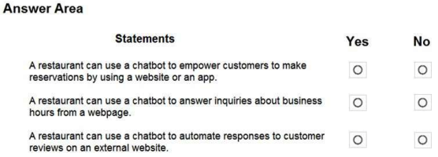
Answer 116
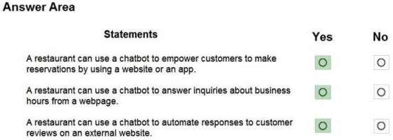
Reference
Question 117
To complete the sentence, select the appropriate option in the answer area.
Using Recency, Frequency, and Monetary (RFM) values to identify segments of a customer base is an example of_____
Answer 117
Correct Answer: classification
Question 118
Hotspot Question
For each of the following statements, select Yes if the statement is true. Otherwise, select No.
NOTE: Each correct selection is worth one point.
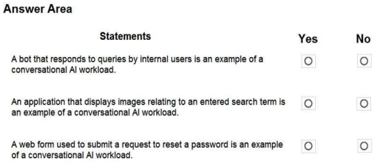
Answer 118
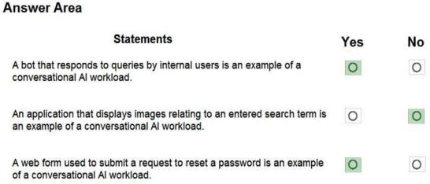
Reference
Question 119
Hotspot Question
For each of the following statements, select Yes if the statement is true. Otherwise, select No.
NOTE: Each correct selection is worth one point.
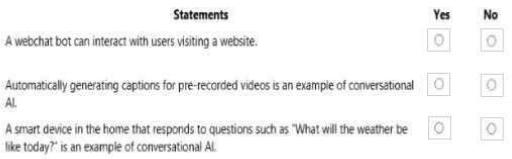
Answer 119
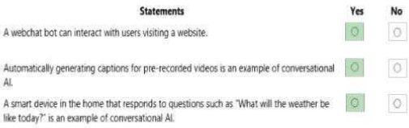
Question 120
Hotspot Question
For each of the following statements, select Yes if the statement is true. Otherwise, select No.
NOTE: Each correct selection is worth one point.
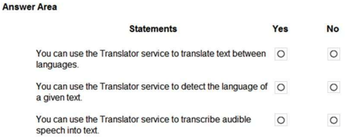
Answer 120
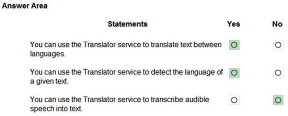
The translator service provides multi-language support for text translation, transliteration, language detection, and dictionaries.
Speech-to-Text, also known as automatic speech recognition (ASR), is a feature of Speech Services that provides transcription.
Reference:
https://docs.microsoft.com/en-us/azure/cognitive-services/Translator/translator-info-overview
Question 121
Hotspot Question
For each of the following statements, select Yes if the statement is true. Otherwise, select No.
NOTE: Each correct selection is worth one point.
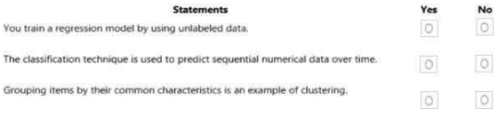
Answer 121
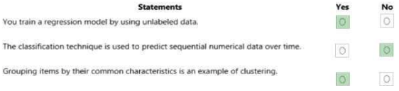
Question 122
Hotspot Question
For each of the following statements, select Yes if the statement is true. Otherwise, select No.
NOTE: Each correct selection is worth one point.

Answer 122
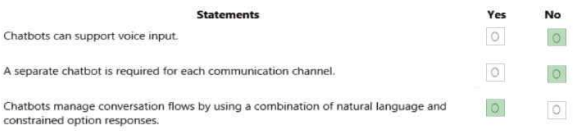
Question 123
Drag and Drop Question
Match the services to the appropriate descriptions.
To answer, drag the appropriate service from the column on the left to its description on the right. Each service may be used once, more than once, or not at all.
NOTE: Each correct match is worth one point
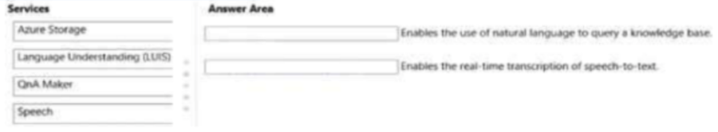
Answer 123
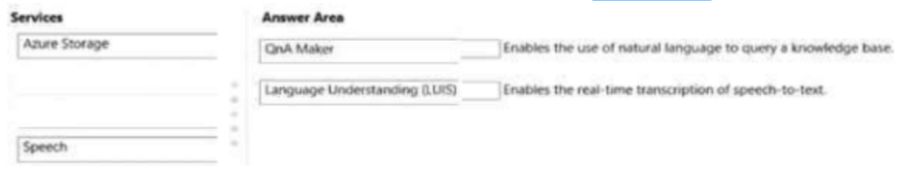
Question 124
Drag and Drop Question
Match the principles of responsible AI to the appropriate descriptions. To answer, drag the appropriate principle from the column on the left to its description on the right. Each principle may be used once, more than once, or not at all.
NOTE: Each correct match is worth one point.
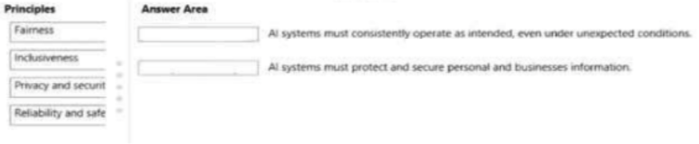
Answer 124
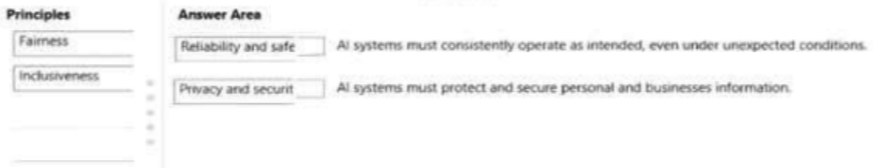
Question 125
For each of the following statements, select Yes if the statement is true. Otherwise, select No.
NOTE: Each correct selection is worth one point.
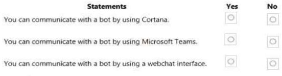
Answer 125

Question 126
You plan to develop a bot that will enable users to query a knowledge base by using natural language processing.
Which two services should you include in the solution? Each correct answer presents part of the solution.
NOTE: Each correct selection is worth one point.
A. QnA Maker
B. Azure Bot Service
C. Form Recognizer
D. Anomaly Detector
Answer 126
Correct Answer: A and B
Reference
Question 127
In which two scenarios can you use a speech synthesis solution? Each correct answer presents a complete solution.
NOTE: Each correct selection is worth one point.
A. an automated voice that reads back a credit card number entered into a telephone by using a numeric keypad
B. generating live captions for a news broadcast
C. extracting key phrases from the audio recording of a meeting
D. an AI character in a computer game that speaks audibly to a player
Answer 127
Correct Answer: A and D
Azure Text to Speech is a Speech service feature that converts text to lifelike speech.
Incorrect Answers:
C: Extracting key phrases is not speech synthesis.
Reference:
https://azure.microsoft.com/en-in/services/cognitive-services/text-to-speech/
Question 128
Drag and Drop Question
You need to scan the news for articles about your customers and alert employees when there is a negative article.
Positive articles must be added to a press book.
Which natural language processing tasks should you use to complete the process? To answer, drag the appropriate tasks to the correct locations. Each task may be used once, more than once, or not at all. You may need to drag the split bar between panes or scroll to view content.
NOTE: Each correct selection is worth one point.
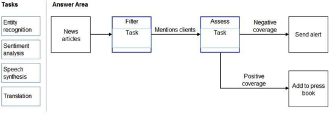
Answer 128
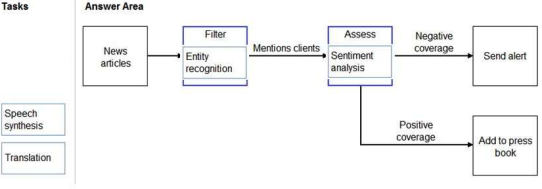
Box 1: Entity recognition
The Named Entity Recognition module in Machine Learning Studio (classic), to identify the names of things, such as people, companies, or locations in a column of text.
Named entity recognition is an important area of research in machine learning and natural language processing (NLP), because it can be used to answer many real-world questions, such as:
Which companies were mentioned in a news article?
Does a tweet contain the name of a person? Does the tweet also provide his current location?
Were specified products mentioned in complaints or reviews?
Box 2: Sentiment Analysis
The Text Analytics API's Sentiment Analysis feature provides two ways for detecting positive and negative sentiment. If you send a Sentiment Analysis request, the API will return sentiment labels (such as "negative", "neutral" and"positive") and confidence scores at the sentence and document-level.
Reference:
Question 129
Domain: Describe AI workloads and considerations
Please select all options that are NOT the key elements of Artificial Intelligence. (2 answers)
A. Machine Learning
B. Anomaly Detection
C. Computer Vision
D. Object Detection
E. Natural Language Processing
F. Conversational AI
G. Automated Machine Learning
Answer 129
Correct Answers: D and G
There are five key elements of Microsoft Artificial Intelligence:
- Machine Learning - the foundation of AI systems.
- Anomaly Detection - tools and services for identification of the unusual activities.
- Computer Vision - tools and services for understanding and recognising objects in images, video, faces and text.
- Natural Language Processing - tools and services for language understanding: text, speech, text analysis and translation Conversational AI - tools and services for intelligent conversation.
Option D is correct. Object Detection - is one of the common tasks of Computer Vision and is not the key element of Artificial Intelligence.
Options G is correct. Automated Machine Learning - is a feature of Machine Learning and is not the key element of Artificial Intelligence.
All other options are incorrect because they are the key elements of Artificial Intelligence.
For more information about the key elements of AI, please visit the below URL:
https://docs.microsoft.com/en-us/learn/modules/get-started-ai-fundamentals/1-introduction
Question 130
Domain: Describe AI workloads and considerations
You created an AI solution. Along with solution deployment, you provided information about the solution's possibilities and limitations. By providing this information, with what principle for responsible AI did you comply?
A. Fairness
B. Reliability and safety
C. Privacy and security
D. Transparency
E. Inclusiveness
F. Accountability
Answer 130
Correct Answers: D
Microsoft recognizes six principles of responsible AI:
Fairness, Reliability and safety, Privacy and security, Transparency, Inclusiveness Accountability.
The principle of Transparency helps people to understand how to use AI solutions, their behavior, possibilities, and limitations.
All other options are incorrect.
For more information about guiding principles for responsible AI, please visit the below URLs:
https://www.microsoft.com/en-us/ai/responsible-ai?activetab=pivot1:primaryr6
https://docs.microsoft.com/en-us/learn/modules/responsible-ai-principles/4-guiding-principles
Question 131
Domain: Describe fundamental principles of machine learning on Azure
You are working for a car dealership. Your boss asks you to provide him information about how many blue cars he needs to order for the next quarter.
You decide to create an ML model and choose an unsupervised machine learning approach.
Will this help you to achieve your goal?
A. Yes
B. No
Answer 131
Correct Answers: B
Your task is to provide a numeric prediction. You can achieve this by creating a regression model based on the historical sales data of the blue cars from previous quarters. A Regression and Classification modeling types are two parts of Supervised machine learning. Only Clustering belongs to Unsupervised machine learning. If you choose the Unsupervised machine learning approach, you will not achieve your goal.
For more information about Supervised and Unsupervised ML, please visit the below URL:
https://azure.microsoft.com/en-us/overview/what-is-machine-learning-platform/#benefits
Question 132
Domain: Describe fundamental principles of machine learning on Azure
You are working for a car dealership. Your boss asks you to provide him forecast information: will the new car model be successful or not. The new model has a variety of engine improvements, more comfortable seats, and a sunroof. You compiled the list of data about previous successful models with their characteristics and sales numbers.
What should you do in the pre-processing data stage that would help you to predict the success of the new model?
A. Data selection
B. Training set selection
C. Data for model evaluation selection
D. Feature selection
E. Data classification
Answer 132
Correct Answers: D
During pre-processing, you need to work with data to select features that influence the label prediction. In this problem, features are the engine characteristics (power or volume), seat comforts, etc. They could help the ML model to predict the success of the new car model. Maybe the sunroof is not essential for predicting the label, and we need to discard this feature from the final set of features that we will use for model training.
In short, Feature selection helps us to narrow down the features that are important for our label prediction and discard all features that don’t play or play a minimal role in a label prediction. As a result, our trained model and prediction will be more efficient.
All other options are incorrect because they are parts of the different data processing events that are irrelevant to the pre-processing (Training set selection or Data for model evaluation selection) or too generic (Data selection or Data Classification).
For more information about Feature selection, please visit the below URL:
[https://docs.microsoft.com/en-us/azure/machine-learning/team-data-science-process/select-features]
Question 133
Domain: Describe fundamental principles of machine learning on Azure
You created a classification model with four possible classes.
What will be the size of the confusion matrix?
A. 2x2
B. 3x3
C. 4x4
D. 6x6
E. 10x10
Answer 133
Correct Answers: C
The confusion matrix provides a tabulated view of predicted and actual values for each class. If we are predicting the classification for four classes, our confusion matrix will have 4x4 size.
All other options are incorrect.
For more information about the Confusion matrix, please visit the below URL:
https://docs.microsoft.com/en-us/azure/machine-learning/how-to-understand-automated-ml#confusion-matrix
Question 134
Domain: Describe fundamental principles of machine learning on Azure
When you are preparing data for the model training, you have to use your domain knowledge to select the label (or labels), features, and scale and normalize them.
What is the generic name for the process that includes all the steps mentioned above?
A. Feature selections
B. Data normalization
C. Model training
D. Featurization
E. Missing data handling
Answer 134
Correct Answers: D
Data pre-processing that involves various techniques, like scaling, normalization or feature engineering, etc. calls featurization.
Option A is incorrect because Feature selections is one of the elements of featurization.
Option B is incorrect because Data normalization is also one of the elements of featurization.
Option C is incorrect because Model Training is the next predictive modeling step after featurization.
Option E is incorrect because Missing data handling is one of the elements of featurization.
For more information about Featurization, please visit the below URLs:
https://docs.microsoft.com/en-us/azure/machine-learning/concept-automated-ml#feature-engineering
https://docs.microsoft.com/en-us/azure/machine-learning/how-to-configure-auto-features#featurization
Question 135
Domain: Describe fundamental principles of machine learning on Azure
What are the four types of Compute resources you can use in Azure Machine Learning Studio?
Please select all that apply. (4 answers)
A. Compute Instances
B. Automated ML instances
C. Compute clusters
D. Inference clusters
E. Classification clusters
F. Attached compute
G. AKS Cluster instances
Answer 135
Correct Answers: A, C, D, and F
When you open Compute blade in Microsoft Azure Machine Learning Studio, you can see all four compute resources:
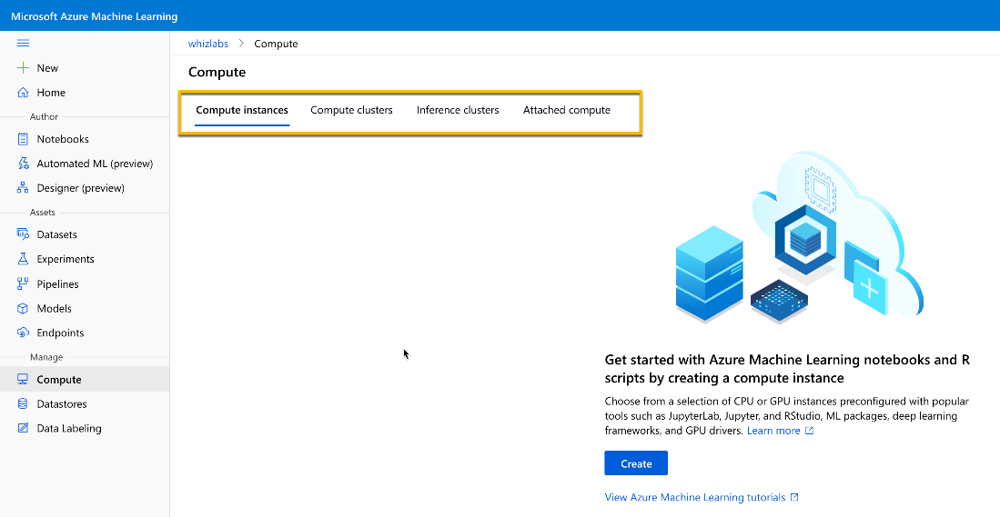
Option B is incorrect because Automated ML instances is the generic ML instance.
Option G is incorrect because AKS Cluster Instance is the generic representation of Azure Kubernetes cluster.
For more information about Azure ML Studio compute resources, please visit the below URLs:
https://docs.microsoft.com/en-us/learn/modules/use-automated-machine-learning/create-compute
Question 136
Domain: Describe features of computer vision workloads on Azure
You created a Custom Vision model. You want your model to detect trained objects on the photos.
What information will you get about each object if you are using an object detection model?
Please select all that apply. (3 answers)
A. Image type
B. Bounding box
C. Image category
D. Class name
E. Probability score
F. Content name
Answer 136
Correct Answers: B, D, and E.
Object detection is the form of ML that helps to recognize objects on the images. Each recognizable object will be put in the bounding box with the class name and probability score.
Here is the Microsoft information about the object detection model:
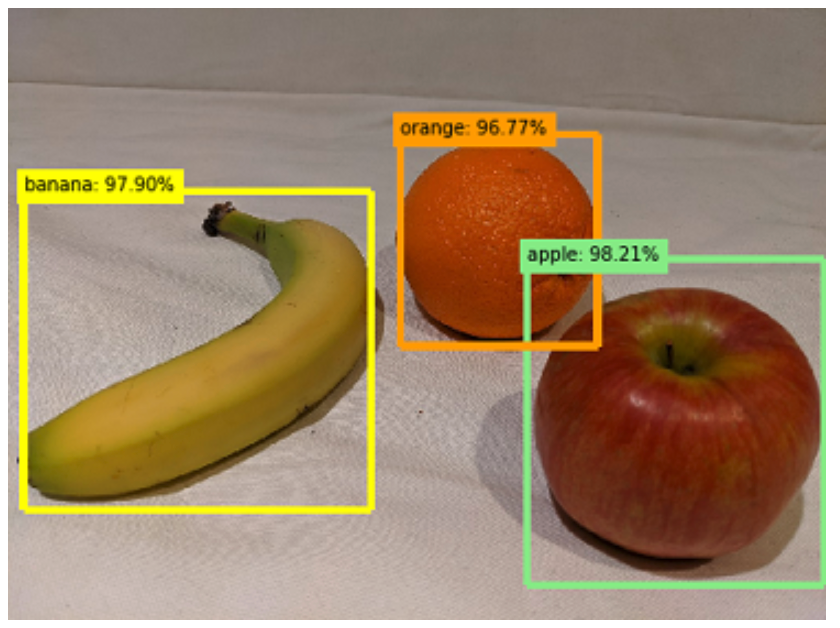
All other options are incorrect because they are not part of the return information from the object detection model.
For more information about Object detection, please visit the below URL:
https://docs.microsoft.com/en-us/learn/modules/detect-objects-images-custom-vision/1-introduction
Question 137
Domain: Describe features of computer vision workloads on Azure
The application scans a document with a lot of pages. It returns the following information for each page: page information, lines information, and words for each line with a confidence level.
What API does the application use to scan the document?
A. OCR
B. NLP
C. Read
D. Text Analytics
E. LUIS
Answer 137
Correct Answers: C
Read API is part of Computer Vision services. It helps to "read" texts within predominantly document images. Read API is an asynchronous service specially designed for the heavy on text images or documents with a lot of the distortions. It produces a result that includes: page information for each page including page size and orientation; information about each line on the page and information about each word in each line including bounding box of each word as indication of the word position in the image.
Option A is incorrect since OCR API is a synchronous service for the recognition of small amounts of text in the images. It returns regions of the text in the image, lines of the text in the region, and words in each line.
Option B is incorrect since Natural Language Processing (NLP) is one the key elements of Artificial Intelligence and is not the part of Computer Vision that deals with text extraction from the images.
Option D is incorrect since Text Analytics is the part of Natural Processing Language (NLP) and is not the part of Computer Vision that deals with text extraction from the images.
Option E is incorrect since Language Understanding Intelligent Service (LUIS) is the part of Natural Processing Language (NLP) and is not the part of Computer Vision that deals with text extraction from the images.
For more information about Read API, please visit the below URLs:
https://docs.microsoft.com/en-us/azure/cognitive-services/computer-vision/concept-recognizing-text
https://docs.microsoft.com/en-us/learn/modules/read-text-computer-vision/2-ocr-azure
Question 138
Domain: Describe features of computer vision workloads on Azure
You created a Custom Vision model using the Custom Vision portal.
What information do you need to provide to the developers to use this model?
Please select all that apply. (4 answers)
A. Project ID
B. Security Key
C. Model name
D. Prediction key
E. Cognitive Service key
F. Prediction Endpoint
Answer 138
Correct Answers: A, C, D, and F.
If you create a Cognitive Service to train and publish the Custom Vision model, you can provide a Cognitive Service endpoint and Cognitive Service key to the developers for access to the model. But if you use the Custom Vision portal or create a Custom Vision resource within Cognitive Service, you will have two separate resources for training and publishing a model. In this case, you need to provide the four pieces of information to the developers: Project ID, Model name, Prediction Key, and Prediction Endpoint.
Option B is incorrect since Security Key is just a generic key that isn't applicable in this case.
Option E is incorrect since we need to provide the pair: Cognitive Service endpoint and Cognitive Service key. Only one of them, a Cognitive Service key, will not work.
For more information about Custom Vision, please visit the below URLs:
https://docs.microsoft.com/en-us/azure/cognitive-services/custom-vision-service/home
Question 139
Domain: Describe features of Natural Language Processing (NLP) workloads on Azure
You are working at the hotel chain. You are planning to apply Natural Language Processing for the sentiment analysis of the customer reviews.
What sentiment score should you expect for the following review: "The prices were ridiculously high. We could stay at the palace for that price! The water in the shower was cold, no hot water whatsoever"?
A. 1
B. 0.5
C. 2
D. 0.9
E. 0.1
Answer 139
Correct Answers: E.
Sentiment analysis is producing the sentiment score between 0 and 1. A score close to 0 means a negative sentiment, and close to 1 - positive. And in cases with neutral or undefined sentiment the score is 0.5. In this problem, the review is negative, and we should expect a score of 0.1.
All other options are incorrect.
For more information about Sentiment Analysis, please visit the below URL:
Question 140
Domain: Describe features of Natural Language Processing (NLP) workloads on Azure
What are the four types of entities that you can create during the authoring of the LUIS Application? (4 answers)
A. Machine-Learned
B. List
C. FAQ document
D. RegEx
E. Chit-chat
F. Pattern.any
G. Alternative phrasing
Answer 140
Correct Answers: A, B, D, and F
During an authoring phase for a Language Understanding application, we need to create intents, entities, and train a model. There are four types of entities that we can create: Machine-Learned, List, RegEx, and Pattern.any.
All other options are incorrect because they are parts for creating a Knowledge base for Q&A Maker and Azure Bot Service.
For more information about LUIS, please visit the below URLs:
Question 141
Domain: Describe features of conversational AI workloads on Azure
What components do you need to create a simple Web Chat Bot?
Select all that apply. (2 answers)
A. Entities
B. Knowledge base
C. Utterances
D. Bot Service
E. LUIS
F. Text Analytics
Answer 141
Correct Answers: B and D
To create a simple Web Chat Bot, you need just two components: Knowledge Base and Bot Service.
We can create a Knowledge base from web site information or FAQ documents, etc. Usually, the Knowledge base is a list of question and answer pairs. Bot Service provides an interface to interact with a Knowledge Base from different channels.
Option A and C are incorrect because Entities and Utterances are the parts of LUIS authoring and are not components of Web Chat Bot.
Option E is incorrect since Language Understanding Intelligent Service (LUIS) is Natural Processing Language (NLP) service and is not a component of Web Chat Bot.
Option F is incorrect since Text Analytics is Natural Processing Language (NLP) service and is not a component of Web Chat Bot.
For more information about Bot Service, please visit the below URLs:
Question 142
Domain: Describe features of conversational AI workloads on Azure
You want to build a personal virtual assistant. What service will you use to connect your assistant with various input channels and devices?
A. Computer Vision
B. Azure Bot Service
C. QnA Maker
D. LUIS
E. Speech to Text
F. Text Analytics
Answer 142
Correct Answers: B
Azure Bot Service connects various channels and devices that users can use for their inquiries.
The Microsoft documentation provides the following information about Virtual Assistant
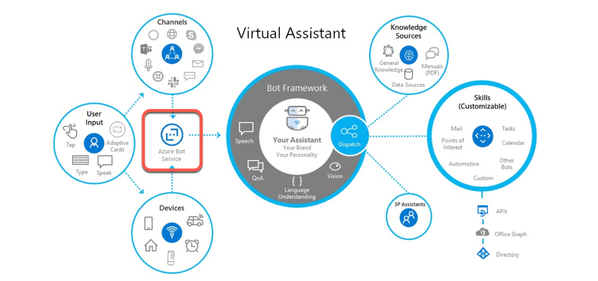
As you can see on the left side, Azure Bot Service serves as data input for Virtual Assistant.
All other options are incorrect.
For more information about Personal Assistant, please visit the below URLs:
Question 143
Domain: Describe features of conversational AI workloads on Azure
You build a Bot using Bot Framework and Azure Bot Service. You want to extend the capabilities of your Bot.
What will you use to achieve your goal?
A. Custom Vision
B. Language Translation
C. Chit-Chat
D. Skills
E. Text to Speech
F. FAQ Document
Answer 143
Correct Answers: D
Using Bot Framework Skills, you can easily extend the capabilities of your Bot. Skills are like standalone bots that focus on a specific function, like Calendar, To Do, Point of Interest, etc.
In the Virtual Assistant design, Bot Framework dispatches actions to Skills.
Here is the Microsoft information about Bot Framework and Skills as parts of Virtual Assistant:
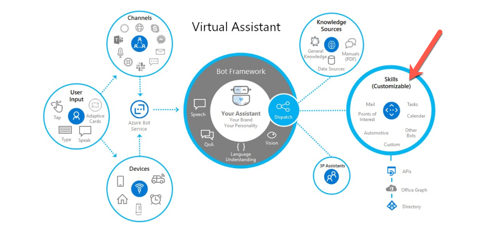
Option A is incorrect because Custom Vision is one the Computer Vision services and potentially can extend Bot functionality as part of the Skill.
Option B and E are incorrect because Language Translation and Text to Speech are Natural Language Processing services and potentially can extend Bot functionality as part of the Skill.
Option C and F are incorrect because Chit-Chat and FAQ documents are the parts for creating a Knowledge base for Q&A Maker and Azure Bot Service.
For more information about Bot Framework Skills, please visit the below URLs:
https://microsoft.github.io/botframework-solutions/overview/skills/
https://microsoft.github.io/botframework-solutions/overview/virtual-assistant-solution/